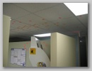
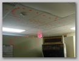
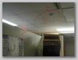
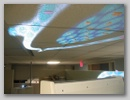
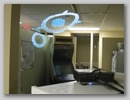

Post it notes seemingly without a pattern

From center of kitchen, a pattern is almost visible

Gamebryo logo appears when standing in one of the kitchen's doors

Projector was setup on bookshelves placed into the doorway

Projected pattern was used as a guide to place post-it notes
Pattern was quickly designed overtop a gamebryo logo. Image was inverted to make it easier to see on walls